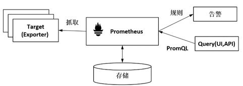
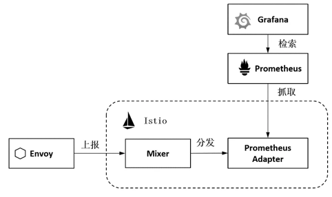
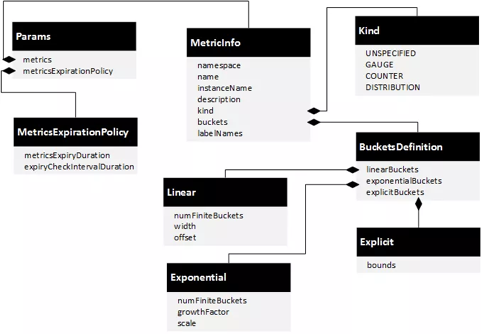
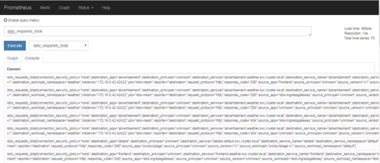
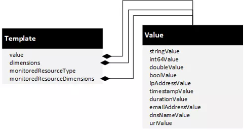

Istio通过Prometheus收集遥测数据–《云原生服务网格Istio》书摘06
本节书摘来自华为云原生技术丛书《云原生服务网格Istio:原理,实践,架构与源码解析》一书原理篇的第4章可扩展的策略和遥测中1.4.1小节Prometheus适配器。更多内容参照原书，或者关注容器魔方公众号。
Prometheus适配器
Prometheus应该是当前应用最广的开源系统监控和报警平台了，随着以Kubernetes为核心的容器技术的发展，Prometheus强大的多维度数据模型、高效的数据采集能力、灵活的查询语法，以及可扩展性、方便集成的特点，尤其是和云原生生态的结合，使其获得了越来越广泛的应用。Prometheus于2015年正式发布，于2016年加入CNCF，并于2018年成为第2个从CNCF毕业的项目。
图4-10展示了Prometheus的工作原理。Prometheus的主要工作为抓取数据存储，并提供PromQL语法进行查询或者对接Grafana、Kiali等Dashboard进行显示，还可以根据配置的规则生成告警。

图4-10 Prometheus的工作原理
这里重点关注Prometheus工作流程中与Mixer流程相关的数据采集部分，如图4-10所示。不同于常见的数据生成方向后端上报数据的这种Push方式，Prometheus在设计上基于Pull方式来获取数据，即向目标发送HTTP请求来获取数据，并存储获取的数据。这种使用标准格式主动拉取数据的方式使得Prometheus在和其他组件配合时更加主动，这也是其在云原生场景下得到广泛应用的一个重要原因。
1．Adapter的功能
我们一般可以使用Prometheus提供的各种语言的SDK在业务代码中添加Metric的生成逻辑，并通过HTTP发布满足格式的Metric接口。更通用的方式是提供Prometheus Exporter的代理，和应用一起部署，收集应用的Metric并将其转换成Prometheus的格式发布出来。
Exporter方式的最大优点不需要修改用户的代码，所以应用非常广泛。Prometheus社区提供了丰富的Exporter实现（https://prometheus.io/docs/instrumenting/exporters/），除了包括我们熟知的Redis、MySQL、TSDB、Elasticsearch、Kafka等数据库、消息中间件，还包括硬件、存储、HTTP服务器、日志监控系统等。
如图4-11所示，在Istio中通过Adapter收集服务生成的Metric供Prometheus采集，这个Adatper就是Prometheus Exporter的一个实现，把服务的Metric以Prometheus格式发布出来供Prometheus采集。

图4-11 Prometheus Adapter的工作机制
结合图4-11可以看到完整的流程，如下所述。
- Envoy通过Report接口上报数据给Mixer。
- Mixer根据配置将请求分发给Prometheus Adapter。
- Prometheus Adapter通过HTTP接口发布Metric数据。
- Prometheus服务作为Addon在集群中进行安装，并拉取、存储Metric数据，提供Query接口进行检索。
- 集群内的Dashboard如Grafana通过Prometheus的检索API访问Metric数据。
可以看到，关键步骤和关键角色是作为中介的Prometheus Adapter提供数据。观察“/prometheus/prometheus.yml”的如下配置，可以看到Prometheus数据采集的配置，包括采集目标、间隔、Metric Path等：
- job_name: 'istio-mesh'
# Override the global default and scrape targets from this job every 5 seconds.
scrape_interval: 5s
kubernetes_sd_configs:
- role: endpoints
namespaces:
names:
- istio-system
relabel_configs:
- source_labels: [__meta_kubernetes_service_name, __meta_kubernetes_endpoint_port_name]
action: keep
regex: istio-telemetry;prometheus
在Istio中，Prometheus除了默认可以配置istio-telemetry抓取任务从Prometheus的Adapter上采集业务数据，还可以通过其他多个采集任务分别采集istio-pilot、istio-galley、istio-policy、istio-telemetry对应的内置Metric接口。
2．Adapter的配置
将在Adapter配置模型中涉及的三个重要对象Handler、Instance和Rule在Prometheus中分别配置如下。
㈠ Handler的配置
Handler的标准格式包括name、adapter、compiledAdapter、params等，name、adapter和compiledAdapter都是公用字段，不同的Handler有不同的params定义，这里重点介绍params字段的使用方法。如图4-12所示是Prometheus Handler的参数定义。
可以看到，Prometheus的Adapter配置比前面示例中的Stdio要复杂得多，其实Prometheus应该是Istio当前支持的多个Adapter中最复杂的一个，也是功能最强大的一个。
- **metricsExpirationPolicy：**配置Metric的老化策略，metricsExpiryDuration定义老化周期，expiryCheckIntervalDuration定义老化的检查间隔。

图4-12 Prometheus Handler的参数定义
通过以下配置的Prometheus Handler，可清理5分钟未更新的Metric，并且每隔30秒做一次检查，检查周期expiryCheckIntervalDuration是个可选字段，若未配置，则使用老化周期的一半时间：
metricsExpirationPolicy:
metricsExpiryDuration: "5m"
expiryCheckIntervalDuration: "30s"
-
**metrics：**配置在Prometheus中定义的Metric。这里是一个数组，每个元素都是一个MetricInfo类型的结构，分别定义Metric的namespace、name、instanceName、description、kind、buckets、labelNames，这些都是要传给Prometheus的定义。有以下几个注意点:
-
Metric的namespace和name会决定Prometheus中的Metric全名。例如requests_total这个请求统计的Metric对应图4-13中Prometheus的Metric：istio_requests_total，即由命名空间istio和Metric名称requests_total拼接而成。
-
instanceName是一个必选字段，表示instance定义的全名。
-
kind 表示指标的类型，根据指标的业务特征，请求计数requests_total的类型为COUNTER，请求耗时request_duration_seconds的类型为DISTRIBUTION。对于DISTRIBUTION 类型的指标可以定义其buckets。
-

图4-13 Prometheus的Metric查询
如下所示是Prometheus Handler的一个定义示例，定义了15秒的老化时间及Prometheus中的多个Metric，有的是HTTP的Metric，有的是TCP的Metric：
apiVersion: "config.istio.io/v1alpha2"
kind: handler
metadata:
name: prometheus
namespace: istio-system
spec:
compiledAdapter: prometheus
params:
metricsExpirationPolicy:
metricsExpiryDuration: 15s
metrics:
- name: requests_total
instance_name: requestcount.metric.istio-system
kind: COUNTER
label_names:
- source_app
- source_principal
- destination_service_name
……
- name: request_duration_seconds
instance_name: requestduration.metric.istio-system
kind: DISTRIBUTION
……
- name: request_bytes
instance_name: requestsize.metric.istio-system
kind: DISTRIBUTION
……
- name: response_bytes
instance_name: responsesize.metric.istio-system
kind: DISTRIBUTION
……
- name: tcp_sent_bytes_total
instance_name: tcpbytesent.metric.istio-system
kind: COUNTER
……
- name: tcp_received_bytes_total
instance_name: tcpbytereceived.metric.istio-system
kind: COUNTER
㈡ Instance的配置
Prometheus作为一个处理Metric的监控系统，其对应的模板正是Metric，这也是Mixer中使用最广泛的一种Instance。如图4-14所示是对Metric Instance的定义。

图4-14 Metric Instance的定义
在本节配置示例中用到的requests_total这个Metric的定义如下：dimensions记录每个请求上的重要属性信息，可以使用在4.1.3节介绍的属性和属性表达式；value: “1"表示每个请求被记录一次：
apiVersion: "config.istio.io/v1alpha2"
kind: instance
metadata:
name: requestcount
namespace: istio-system
spec:
compiledTemplate: metric
params:
value: "1" # count each request twice
dimensions:
reporter: conditional((context.reporter.kind | "inbound") == "outbound", "source", "destination")
source_workload_namespace: source.workload.namespace | "unknown"
source_principal: source.principal | "unknown"
source_app: source.labels["app"] | "unknown"
source_version: source.labels["version"] | "unknown"
destination_workload: destination.workload.name | "unknown"
destination_workload_namespace: destination.workload.namespace | "unknown"
destination_principal: destination.principal | "unknown"
destination_app: destination.labels["app"] | "unknown"
destination_version: destination.labels["version"] | "unknown"
destination_service: destination.service.host | "unknown"
destination_service_name: destination.service.name | "unknown"
destination_service_namespace: destination.service.namespace | "unknown"
request_protocol: api.protocol | context.protocol | "unknown"
response_code: response.code | 200
response_flags: context.proxy_error_code | "-"
permissive_response_code: rbac.permissive.response_code | "none"
permissive_response_policyid: rbac.permissive.effective_policy_id | "none"
connection_security_policy: conditional((context.reporter.kind | "inbound") == "outbound", "unknown", conditional(connection.mtls | false, "mutual_tls", "none"))
monitored_resource_type: '"UNSPECIFIED"'
使用这种方式可以定义其他多个Metric，例如Istio中常用的requestcount、requestduration、requestsize、responsesize、tcpbytesent、tcpbytereceived等。
㈢ Rule的配置
通过Rule可以将Handler和Instance建立关系，例如，下面两个Rule可以分别处理HTTP和TCP的Instance：
apiVersion: "config.istio.io/v1alpha2"
kind: rule
metadata:
name: promhttp
namespace: istio-system
spec:
match: (context.protocol == "http" || context.protocol == "grpc") && (match((request.useragent | "-"), "kube-probe*") == false)
actions:
- handler: prometheus
instances:
- requestcount
- requestduration
- requestsize
- responsesize
apiVersion: "config.istio.io/v1alpha2"
kind: rule
metadata:
name: promtcp
namespace: istio-system
spec:
match: context.protocol == "tcp"
actions:
- handler: prometheus
instances:
- tcpbytesent
- tcpbytereceived
只要通过以上配置，我们不用修改任何代码就可以在Prometheus上看到各种Metric，进而对服务的访问吞吐量、延时、上行流量、下行流量等进行管理。